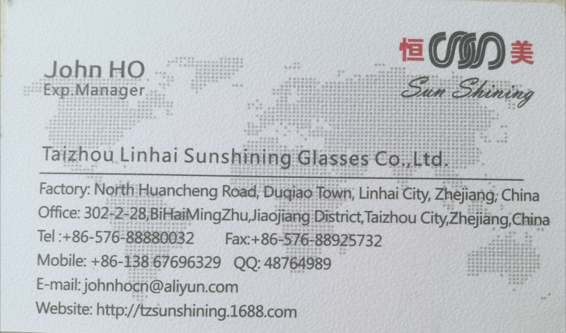

Taizhou Linhai Sunshining Glasses Co.,Ltd. is a manufacturing company with 15 years experience in producing sunglasses, optical frames, reading glasses and spectacle spare parts. Our models material have much difference choose, such as plastic in PC, TR90, AC, metal in Cupper and Stainless steel. Our factory covers an area of more than 5,000 square meters. Our main products have similar 1000 designs and capacity more 4 millions pieces every year, and most goods are exported to Russia, Ukraine, Japan, India, European and American countries. OEM and ODM is also acceptable. All world clients are warmly welcome to work with us.
We follow a principle: Make good business just same as make good friends.
